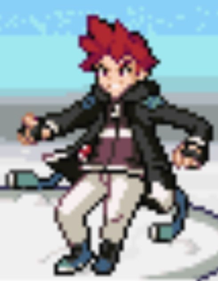

Quick Guide:
- Choose a First Pokémon and escape the Shadow Base
- Arrive in Frozen Heights
- Battle your Rival
- Explore Route 1
- Run an Errand in Bellin Town
- Confront the Shadow Grunts
Introduction
As soon as you start Pokémon Unbound, make sure whatever device you’re playing it on has the Real-Time Clock enabled; outdoor areas in Unbound have a day-night Pokémon catching cycle.
Day starts at 5:00am and ends at 7:59pm; Night starts at 8:00pm and ends at 4:59am.
If that’s been taken care of, time to create your character and set the difficulty.
Not only can you customize the color of your character’s hair and clothes, but there are several difficulty settings in Unbound.
For a first playthrough, it is recommended to play on Vanilla difficulty. You also have the ability to turn Exp. Share off; it is enabled to apply to your whole team by default.
Shadow Base
The introduction explains a bit of the history of Borrius, the region this game is set in, and shows you that you’ve been dragged through a portal by a mysterious Pokémon.
Items
| Items | |
|---|---|
| Potion | |
|
Repel (hidden) |
|
| Potion | |
This section is relatively straightforward – after you can move, you’re in an area that looks like a big warehouse.
Walk to the south and east and you’ll see that you’re not alone in this place.
Walk far enough and you’ll soon find out who you’re in here with.
A rebellious youth with red hair confronts the guard blocking the exit to this warehouse, but since he doesn’t have any Pokémon there’s no way to escape just yet.
This is your Rival, and after a short conversation, you decide to team up with him to get out of here.
Your Rival leads you to a crate containing three Pokémon, and you’ll need to pick one.
Unlike a regular game in the series, you don’t have the choice between Fire, Water or Grass. Instead, your choices are a little more interesting:
| Starter Pokémon | |
|---|---|
|
Beldum (Lv.10) |
 |
|
Gible (Lv.10) |
 |
|
Larvitar (Lv.10) |
|
- If you pick Beldum, your Rival picks Gible
- If you pick Gible, he takes Larvitar
- If you pick Larvitar he gets Beldum
Now that you both have Pokémon, it’s time to fight that Grunt.
It’s time for your first battle, and it’s a Double Battle, with your Pokémon together with your Rival’s to defeat the Grunt’s pair.
| Shadow Grunt | |
|---|---|
|
Inkay (Lv.7) |
 |
|
Skorupi (Lv.7) |
 |
After the Grunt has been dispatched, your Rival heals your Pokémon before getting out of there very quickly. Follow him south and down the next passage.
The evil group whose base you were in – seemingly named the Shadow – aren’t happy about your escape, and aren’t happy at the guard who let you go.
But you’re free of them for now – and find yourself back in your hometown of Frozen Heights.
Frozen Heights
{kind=link}
| Points of Interest | |
|---|---|
 |
Shadow Base Exit |
 |
Rival’s House |
 |
Professor Log’s Lab |
 |
Your House |
 |
Neighbor’s House |
| Exits | |
|---|---|
| Requires HM Rock Smash | |
| Requires HM Cut | |
 |
Route 1 |
| Items | |
|---|---|
| Berry Juice | |
The tunnel you take out of the base leads to a secret exit on an icy lake, near Frozen Heights.
The only thing to do is to slide on the ice south and see if you can reach solid ground.
There’s really only one path to take, and that leads to a set of steps leading up to the island the town of Frozen Heights is on.
As soon as you arrive, you see your Rival talking to an old man.
The old man is Professor Log, who has a lab in town that researches Pokémon stats. He’s also been looking after your Rival and his sister since their parents went missing.
Your Rival is keen to show off his new Pokémon though, and he wants to battle you in front of the Professor!
Rival Battle
| Rival Battle (First Round) | |
|---|---|
|  | |
|
Beldum or Gible or Larvitar (Lv.10) |
|
After your battle, your Rival runs off, but Professor Log sees potential in you and decides to entrust you with an errand.
Exploring the Town
Bellin Town is nearby, on the other side of Route 1, and Professor Log needs you to pick up a package for him at the Poke Mart.
He also gives you a Repel, 5 Poke Balls, and the Western Borrus Pokedex! He gives a spare Pokedex to give to our Rival as well when we see him next.
Before you leave, he advises you to check in on your mother.
Your house is on the east side of town – head over there and your Mom will give you the chance to rest. She also gives you a Mission Log, which is a component for your Cube.
You might have noticed – you don’t have a Bag in this game.
Everything goes into the Cube, which is half personal assistant, half digital item storage device.
Your Mom enters your mission from Professor Log into the Cube so you can keep track of it, as well as giving you a Costume Box and the battle items storage component.
With that out of the way, head to Professor Log’s lab.
Inside the lab are some scientists you can talk to, as well as Log himself. There’s a Porygon in here that acts as a Pokémon Storage System access – whenever you see a Porygon in some locations, that’s what you can use them for.
One last thing for you to do here is head to the southeast part of town to pay a visit to your neighbors, who are an old married couple.
The old man needs an Antidote from a Poke Mart, and considering you’re already heading to the one in Bellin Town, it should be easy for you to pick it up.
With everything in town completed, it’s time to go south to Route 1 and, eventually, Bellin Town.
Route 1
{kind=link}
| Points of Interest | |
|---|---|
|
Snow-Blocked Path |
|
Icicle Cave Entrance |
| Exits | |
|---|---|
 |
Frozen Heights |
 |
Requires HM Rock Climb |
|
Bellin Town |
Items
| Items | |
|---|---|
| Ice Heal | |
|
Oran Berry (hidden) |
|
Wild Pokémon
| Wild Pokémon | |
|---|---|
| Long Grass | |
|
Snorunt Day and Night |
|
|
Vanillite Day and Night |
|
|
Delibird Day and Night |
 |
|
Minior Day and Night |
 |
Arriving on Route 1, you’ll notice that the main way through is blocked by a bunch of snow. A worker tells you to take the mountain path, which starts in the southwest.
There are patches of long grass to get through, but all in all it’s very easy to find your way along the path and down the other side.
You will arrive at the entrance to Bellin Town before long. Just before you get there, you’ll notice a cave entrance to the west, blocked by an old man.
This is Icicle Cave, and you’ll be going there eventually. For now, head south into town.
Bellin Town
{kind=link}
| Points of Interest | |
|---|---|
|
Pokémon Center |
|
Sandslash Thief House |
|
Heal Ball House |
|
Pokémon Egg Gentleman |
|
Poke Mart |
| Exits | |
|---|---|
|
Frozen Heights |
| Items | |
|---|---|
|
Heal Balls (x5) |
|
If your Pokémon need healing, the Pokémon Center is in the northwest corner.
Head to the house to the northeast, where you can receive a mission from a family living there. Speak to the father and he’ll let you know about a food thief problem they’re having.
But as soon as you finish talking, the culprit arrives – an Alolan Sandslash, who immediately goes for the food. When the man’s daughter tries to stop it, she gets hurt a little.
The father wants you to track the thief down and give back the food it stole, and he’ll give you a decent reward.
The moment you leave the house, you see the Sandslash run off towards Icicle Cave, so you know where to track it down next.
Just south of the Sandslash mission house is a gentleman who has a Pokémon Egg to give you.
It will hatch in time, but it has the potential to hatch into any three of the following Pokémon at random:
|
Egg Pokémon (one at random) |
|
|---|---|
|
Stunky (Lv.1) |
 |
|
Skorupi (Lv.1) |
|
|
Glameow (Lv.1) |
|
Your ultimate destination in town is the Poke Mart, which is in the southeast corner.
When you step inside, you bump into someone familiar on the way out.
The suspicious person leaves, but when you talk to the Mart employee he tells you that, due to a misunderstanding, Professor Log’s package has been stolen – by the man who just left!
In a cutscene, you’re told that the man who stole the package was the Grunt you and your Rival beat back in Shadow Base, and that the package is now with Marlon who is heading north of Frozen Heights.
Time to catch up to them.
Return to Frozen Heights
When you head to the north side of Frozen Heights you’ll see Marlon break through the Cut tree. Follow him and you’ll see a strange sight.
Marlon and the Shadows lure the Legendary Pokémon Articuno out from its hiding place and capture it!
As they leave, they spot you, and one of the Grunts is left behind to deal with you.
She has the package, so you’ll need to defeat her to get it.
| Shadow Grunt | |
|---|---|
|
Snorunt (Lv. 9) |
|
You’ve finally got your hands on the package and it’s time to return to Frozen Heights and give it to Professor Log.
Unfortunately, the Master Balls are missing from the package, and Professor Log is very concerned about what happened with Articuno.
He sends you on to Dresco Town, which can be reached through Icicle Cave, to talk to an old friend of his.
Before we leave town though, you’ve got some medicine to deliver.
When we hand over the Antidote, the old man gives us a Gem that can power up a single move, but the type of the Gem depends on your starter Pokémon.

With everything in Frozen Heights taken care of, head down Route 1 again until you see the entrance to Icicle Cave.